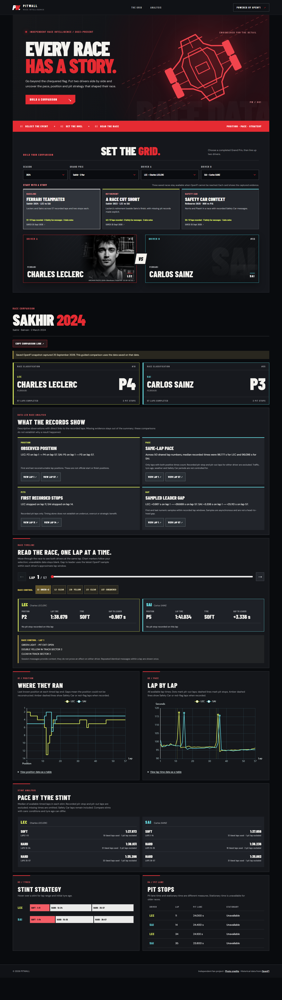

PitWall
Confronto tra piloti di Formula 1.

Web app pubblica
PitWall
Confronta due piloti per posizione, tempi sul giro, pneumatici e soste nelle gare concluse.
Dati mancanti e confronti riproducibili
I dati di gara possono essere incompleti. I confronti guidati usano dati salvati e validati, con copertura e limiti espliciti. Le altre gare dipendono da OpenF1 o dalla cache.
React · TypeScript · Cloudflare Workers